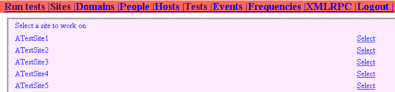
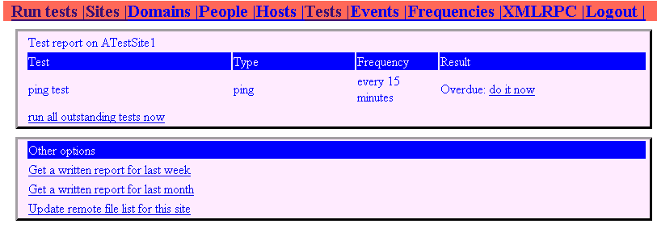
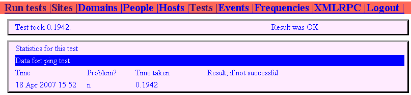
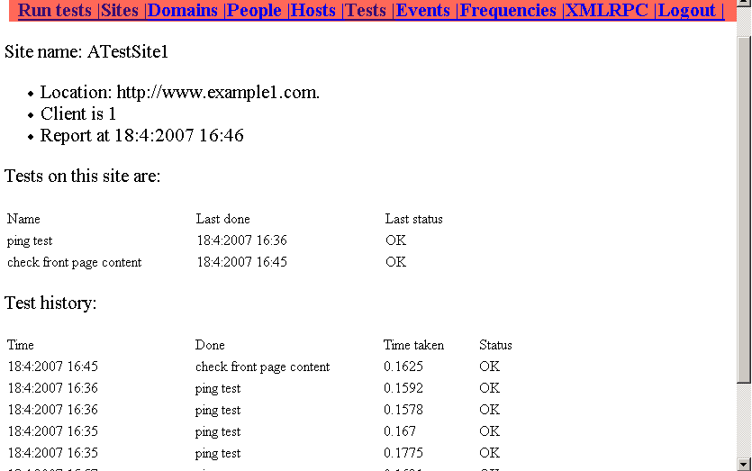

第十四章 审视 CI
这本书以一些特定例子开始，这些例子演示了 CodeIgniter 如何能节约你的时间，让你在用PHP开发网站时更有效率。在开发这个能够定期测试其它网站的网站应用中，CI成为该网站的一些基础部分，我们也花了一些时间来演示CI所能做的那些事情。我希望这些例子已经显示了 CI 如何在宏观上使编码更容易。
在这一章中, 我想要稍微往回走一点，来看一下使用CI框架带来的全面影响。 它使写一个完整的应用变得容易吗? 它能产生专业的结果吗?
当你写一本像这样的书时，把它分成几部分，并且每次把重心集中在一个新的战术上是很重要的。这意味着把各部分的东西组合在一起有时候是很困难的。我希望在上一章的“实现 CRUD”的代码提供了把AR和单元测试以及表格等不同部分组合起来的一些方法。在这一章里，我想要演示如何把所有的部分组合在一起最终交付一个完成的项目。换句话说，我们的测试网站能够正常工作吗？
由上而下地查看一些来自网站的样本代码应该有助于我们拟订一个平衡表：
- CI 提供帮助的地方
- 组织网站
- 使代码变成更简单
- 为你完成一些工作（数据校验等）
- CI 不能提供帮助的地方。
14.1 一些代码：“do_test”模型
我们来仔细查看我们网站上一个模型中的一部分，这个模型与'tests'表和'events'表一起工作。 它的目的是控制我们网站上的中间函数。例如在远程网站上做的测试。 这个模型:
- 连接到sites表列出的网站数据库表并进行测试
- 更新另外一张表，也就是events表(也就是, 每次一个测试被实施 )
- 提供用户接口， 让他或者她选择一个测试样式并且以各种不同的格式得到数据
因为它是一个模型, 它需要被一个控制器调用，并且返回结果给视图。 如果视图包含超链接, 它们依次调用一个控制器函数, 扮演另一个模型函数的前端的角色。
这是 do_test 模型的主要功能之一：从一个数据库查询直接生成一张数据表的信息。 这样做将列出可用的网站和选择其中一张表进行测试。 如果你还没有从中选择一个, 函数生成一张网站列表让你从中选择一个。代码如下:
/*this function prepares a report on existing tests and allows you to choose which to do. First, it selects a site and reports on that*/ function report($site=0,$message='') { /*have you chosen a site yet?*/ $siteid = $this->uri->segment(3, 0); if(!$siteid > 0) { $text = "<table class='table'>"; $text .= "<tr><td colspan = '2'>Select a site to work on</td></tr><tr>"; $this->db->select('name, id'); $query = $this->db->get('sites'); if ($query->num_rows() > 0) { foreach ($query->result() as $row) { $text .= "<tr><td>"; $text .= $row->name; $text .= "</td><td>"; /*note the next line uses the CI anchor function to generate hyperlinks*/ $text .= anchor("tests/report/$row->id","Select"); $text .= "</td></tr>"; } } $response['mytext'] = $text; $response['message']= $message; $this->display->mainpage($response); }
作为结果，当它通过一个控制器被调用的时候，它会生成一个页面：

它列出了一个供测试的网站清单，并提供一个与每个网站对应的超链接。因此你能选择那个网站。我喜欢使用 HTML“表格”类自动地完成它，但是如果我通过这个超链接来选择需要测试的网站，我找不到一个容易的方法来包含结果行的超链接。但是:
- CI 的 AR 使数据库查询非常容易编写
- CI 的 anchor 函数（URL 辅助函数的一部分）使超链接编写起来比较容易
并且, 理所当然地, 当我们把我们的网站迁移到生产服务器时，我们知道这两个 CI 函数会自动更新数据库连接信息和URL的设置。
CI 也帮助我们组织代码。当模型从菜单中被调用时，$siteid变量将作为URL的一部分。
注意真实的网页是如何通过display模型的 mainpage 函数创建的。 模型do_test要做的一切就是从数据库获取我们需要的特定的信息, 并把它送走。 display模型把它用CSS文件进行格式化，把它放到一个网页上作为一个菜单项。
当然, 因为表格式放在dotest模型中，这样做并不是很合适。 那里有太多的尖括号了，理想地，他们应该在一个视图文件中。 因此, 这需要我们为这些数据专门设计一个 '视图' 文件。 这样做似乎比较简单。至少数据没有和CSS文件放在一起。
现在我们移至这函数的下半部份。 如果你已经选择一个网站，视图现在让我们看到针对那个特别网站所做的测试结果。
代码看起来像这一样-是下面这个条件语句的else部分:
if (!$siteid > 0)
换句话说，当一个符合条件的$siteid作为参数传入后会执行下列代码：
else { /*ok, you've chosen a site. let's go to town*/ $this->db->select('sites.name AS sitename, sites.url AS siteurl, tests.name AS testname, tests.lastdone AS lastdone, tests.id AS testid, frequency, sites.id AS siteid, tests.type AS type'); $this->db->join('sites', 'sites.id = tests.siteid'); $this->db->orderby('frequency desc, sitename asc'); $this->db->where('sites.id', $siteid); $query = $this->db->get('tests'); if ($query->num_rows() > 0) { $xrow = $query->row(); $report = "<table class='table'><tr ><td colspan='4'>Test report on $xrow->sitename</td></tr>"; $report .= "<tr class='header'><td width ='25%'>Test</td><td width ='15%'>Type</td><td width ='10%'>Frequency</td><td width ='40%'>Result</td></tr>"; foreach ($query->result() as $row) { $report .= "<tr><td width ='25%'>"; $report .= $row->testname; $report .= "</td><td width ='15%'>"; $report .= $row->type; $report .= "</td><td width ='10%'>"; // $report .= $row->lastdone; $this->db->select('name'); $this->db->where('id', $row->frequency); $fquery = $this->db->get('frequencies'); if ($fquery->num_rows() > 0) { $frow = $fquery->row(); $sid = $frow->name; } $report .= $sid; $report .= "</td><td width ='40%'>"; $alf = $this->deadline($row->testid); if($alf== FALSE) {$report .= "Overdue: "; $report .= anchor("tests/runtest/$row->testid/human", 'do it now');} else{$report .= "Last done: $alf";} $report .= "</td></tr>"; } $report .= "<tr><td colspan='4'>"; $report .= anchor("tests/runalltests/$row->siteid", 'run all outstanding tests now'); $report .= "</table>"; } else $report = "no tests for this site yet.";} $report .="<table class='table'><tr class='header'><td>Other options</td></tr>"; $report .= "<tr><td>"; $report .= anchor("tests/getwrittenreport/$row->siteid/604800", 'Get a written report for last week'); $report .= anchor("tests/getwrittenreport/$row->siteid/2592000", 'Get a written report for last month'); $report .= "</tr><tr><td>"; $report .= anchor("tests/getbaseremotefiles/$row->siteid", 'Update remote file list for this site'); $report .= "</td></tr><table>"; $response['mytext'] = $report; $this->display->mainpage($response); } }
这个代码的运行结果是：

你能看到它已经查询了数据库以找出针对我们选择的网站要做哪些测试。 只有一个测试, 一个简单的 'ping', 这个测试被建议需要每 15 分钟做一次。
因为在最近的 15 分钟内还没有这样做，因此，它已经显示为过期，而且一个超链接让我们可以做这一个测试。 如果我点击超链接，我调用了tests控制器的runtest函数，提供它我想要的测试的ID值。
结果是：

测试完成后，系统会告诉我什么时候进行的测试，有没有问题, 和花了多长时间。
如果我现在返回到report函数，你可以重新调用针对我选择的这个网站的上一周，上一月的测试报告。我只是把这个网站作为一个例子，因此，它没有真正的测试历史: 但是如果我执行了连续的一系列的测试，报告中将会增这些测试的结果。

正如你看到的一样，我们正在建立一项报告，它能在不同的时间以不同的测试方式得到某位客户的网站正在运行着并且能作出回应的结果。测试的任一次都不会比另外一次来得更有趣, 但是可以帮助我们得到一个比较长的时间段的图表。
实际上进行测试的函数被构造成一个swith语句。 它有两个参数:
- 测试的ID值, 它给我们提供了我们需要运行的网站的基本数据: URL，域名/地址，测试完成后需要的文字信息
- 用户类型。 (如果用户真正的人，程序会以对人更友好的格式返回更多的信息-换句话说，如果你想要在屏幕上显示结果,调用时把用户参数设置为人。 如果你想要系统处理结果, 将这一个参数设定为其它。)
在这个代码片段中，我们已经定义了测试的一些类型。 两个例子是:
- “ping”测试，只是简单地调用URL。 如果他们得到一个结果，他们或是用一个预设的格式来分析它(在数据库中被称为 '正则表达式') 或是在没有设置正则表达式时作为一个一般性的 HTML 术语。
- “ete”测试，用一些我们开发的代码来对一个被保护的网页进行一个'全面' 的测试, 登录后查找一个预期的片段。 这段代码不在这一本书中进行解释，因为它属于CI的函数。
每个测试返回一个$result变量和一个$timetaken变量，这些作为一个记录被保存在数据库的'events'表中，连同一些来自数据库的其它的信息。下面列出代码，这些代码很大程度上依靠CI的AR模型读写数据库，并且使用benchmark类统计每次测试需要的时间。
/*function to run an individual test*/ function runtest($testid, $user='human') { /*first, look up the test details */ $this->db->where('id', $testid); $query = $this->db->get('tests'); if ($query->num_rows() > 0) { foreach ($query->result() as $row) { $type = $row->type; /*then work out which type it is and forward it accordingly*/ switch ($type){ case 'ping': $this->benchmark->mark('code_start'); $result =$this->pingtest($testid); $this->benchmark->mark('code_end'); $timetaken = $this->benchmark->elapsed_time('code_start', 'code_end'); break; case 'ete' : $this->benchmark->mark('code_start'); $result = $this->httppost($testid); $this->benchmark->mark('code_end'); $timetaken = $this->benchmark->elapsed_time('code_start', 'code_end'); break; default: $result = 'noid'; } /*work out which site the test belongs to*/ $this->db->select('tests.siteid AS id'); $this->db->where('id', $testid); $query = $this->db->get('tests'); if ($query->num_rows() > 0) {$srow = $query->row(); $mysiteid = $srow->id; } else{$mysiteid = 0;} /*build the rest of the result set and enter it into the database*/ $time = now(); if($result == 'OK') {$isalert = 'n';} else{$isalert = 'y';} $this->db->set('name', $type); $this->db->set('type', 'test'); $this->db->set('timetaken', $timetaken); if($result != '') {$this->db->set('result', $result);} $this->db->set('testid', $testid); $this->db->set('userid', 0); $this->db->set('siteid', $mysiteid); $this->db->set('time', $time); $this->db->set('isalert', $isalert); $this->db->insert('events'); $mydata = array( 'lastdone' => $time, 'notes' => $result, 'isalert' => $isalert ); $this->db->where('id', $testid); $this->db->update('tests', $mydata); /*only return this info to screen if user is human. Otherwise, no need to do anything more; you've updated the database.*/ if($user == 'human') {$mytext = "<table class='table'><tr>"; $mytext .= "<td>Test took $timetaken.</td>"; $mytext .= "<td>Result was ".$result.'</td</tr></table>'; $mytext .= $this->testhistory($testid); $response['mytext'] = $mytext; $this->display->mainpage($response);} else{return $response;} } } }
我们如何实际上打印出测试报告是一个 CI 能提供较大帮助的有趣例子。你可以有多种的选择。你能用硬编码的方式打印出你的报告，在你的代码中使用 HTML 就像我们早些时候所做的，像这样:
/*do database query here!*/ /*now format the results the hard way......*/ $report .= "<p>Test history:</p>"; $report .= "<table width='100%'><tr><td width ='20%'>Time</ td><td width ='20%'>Name</td><td width ='10%'>Time taken</td><td width='45%'>Status</td></tr>"; if ($query->num_rows() > 0) { foreach ($query->result() as $row) { $report .= "<tr><td width='20%'>"; $report .= gmDate("j:n:Y H:i", $row->time); $report .= "</td><td width='20%'>"; $report .= $row->name; $report .= "</td><td width=10%>"; $report .= $row->timetaken; $report .= "</td><td width = 45%>"; if($row->isalert == 'n') {$report .= "OK";} else {$report .= "problem: $row->result";} $report .= "</td></tr>"; } $report .= "</table>";
另一方面，你可以使用 HTML 的表格辅助函数来使生活变得更容易:
/*do db query here */ /*format the results using the CI HTML table library*/ $report .= "Test history:"; /*redefine our CI table layout if we want to, using our css file*/ $tmpl = array ('table_open' => '<table border="1", class="table">',); $this->table->set_template($tmpl); if ($query->num_rows() > 0) { $this->table->set_heading('Time of test', 'Name ,'Time taken','Result'); $report .= $this->table->generate($query3); } $this->table->clear();
明显地, 更短而且更简单。 结果和使用HTML的格式完全一样。 不过，让我们来看这些代码带来的两个问题。
当你看得更仔细一些的时候，有一个与方便俱来的妥协。 前一段代码, 比较长的版本, 格式化日期是可能的:
这提供给我一个对人更友好的日期，而不是我实际保存在数据库中的 Unix 格式日期。 换句话说，在表中如果表示为'24 Apr 2007 09 04' 会比'1177405479'好. 但是, 要用CI的HTML 表格函数做到这一点不容易。(你可能能够在一些数据库系统的数据库查询中做到这一点; 但是 MySQL 的日期函数只能操作和保存 MySQL 的独特的日期格式的数据，我们选择改为使用 Unix 格式.) 我们在早些时候当我们要生成超链接时碰到了相同的麻烦。你不能这样做。
这于这点有另外一个大问题。格式应该存放在哪里? 先前写的所有的代码应该出现在一个控制器中或一个模型中。 (我已经把它写在一个模型中, 当用户点击一个链接来生成测试报告时被控制器调用，把它放在模型中的理由是这样在我需要的时候可以从几个控制器中调用它。)
MVC 纯粹论者会说你不应该在一个模型中存放格式。 它应该放在视图中，当然, 的确他们有他们的道理。 我可能想要重写代码生成一个文本报表, 而且使用 CI 的下载辅助函数以文本的格式下载它而不是屏幕上显示它。（关于下载辅助函数的内容请参考第十一章。）当我这样做时, 我必须改写所有的代码以生成文本控制符而不是<tr></tr>之类的，甚至更糟糕的是，生成.rtf格式或一些类似的富文本格式。
另一个选择是可以使用其它可能的 PHP 语法或模板语法分析器类，把变量或占位符号, 放在视图中。 (针对这些内容在第五章有些简要的论述。) 然后，你把真正的，未格式化的数据传递给视图。 这可能使 MVC 纯粹论者满意，我的观点是这种什么是把一个复杂的额外的层加入到代码中。但是这仅是我个人的观点，而且多数人会不同意这一点。
重要的一点是 CI 提供多种选择: 它让你自由选择你感到愉快的那一种。没有绝对对或者错的方法: 确实有一些方法比另一些表现更好，适合你本人的方法的是最好的方法。
14.2 一个平衡表
让我们回顾我们已经在这一本书中涉及的内容。CI 有帮助吗？
14.2.1 CI 能提供帮助的地方：结构
即使只观察我们网站一部分比如说一个模型，很明显发现一些有实用价值的应用正在变得很复杂。CI, 通过建议或者一定程度上的强迫，构建了一个 MVC 结构, 来帮助你使复杂的东西变得更有条理。 虽然你还可能忘记你把一段代码放到哪里去了, 或者会在不同的控制器或模型中重复编写一个相似的函数: 但是它更多的是让你的代码更合乎逻辑。
CI 的 URL 机制帮助你快速从一个代码文件连接到别一个。
CI“超级对象”没有 namespace 冲突，能够使代码互相调用并互相传递数据。 因为每一个变量都有自己的作用域，因此即使同名也都相安无事，不会引起混乱。同时，你能容易地在从你的代码中上存取所有的 CI 资源。
CI 的“config”文件鼓励你们建立针对你网站参数的集中设置。
所有的这些好处使你在开发网站时更容易，维护更方便，也更有利于别的程序员看懂代码。
14.2.2 CI 能提供帮助的地方：简化
CI 在许多方面帮助你简化代码。 也许最好的例子来自AR类, 但是还有很多其它的方面。 CI 把复杂的代码隐藏在函数或一些类库中，做得很优秀，允许你使用一个简单的函数来调用它们。
14.2.3 CI 能提供帮助的地方：额外功能
当你使用CI的时候，许多 CI 函数带给你许多额外的好处。像URL类和AR类能够自动读取config文件的设置参数，因此你不需要重复数据，因此，针对网站的修改只需要在一个地方进行就可以在整个程序得到应用。
有许多小的例子-容易的方法使你能屏蔽机器人来抓取你的电子邮件住址, 举例来说（见第三章），又或者 AR 类也能为你准备数据。
事实上，CI主要的学习曲线 (至少对我来说) 就是去发现可以走什么捷径，并且请记住，使用它们来代替艰苦漫长的PHP编程。 如果这一本书能指导你更方便地找到捷径，它就达到了目的。
14.3 CI 的问题
CI 并不十全直美。 这意味着它本身是一个平衡体：轻巧便捷，而不是复杂和全面。正如有人曾经说过：'轻量级'意味着"我想要的东西都包含，我不想要的都不包含"。
14.3.1 完整性
CI函数几乎包含了你在开发一般网站时所需要的全部内容。但也有一些CI主要函数库中没有包含的例外，而它们之中的绝大多数被CI社区中的用户提供的类库所覆盖。（详见下一章），或者你可以通过PEAR得到。最明显的省略包括：
- AJAX 类
- 编写网络机器人的类
- 一个创建加密网站的类, 处理登入，网页保护，以及其它的基本会话维护
- 一个改进的 '脚手架' 类, 能提供面向外部网络功能，而不仅仅面向开发都。
CI 也从Rails书中摘了一页，制作了一个代码生成器，能够帮助开发者建立客制化类。
14.3.2 易用性
CI 提供你期待的学习效果。 但是, 假如你已经了解一些 PHP知识, 会变得相当容易。 事实上, 我发现CI主要的'学习曲线'是，如果你知道如何用标准 PHP 方法实现某个功能，你就会很容易地用CI实现。只有稍后，当你从用户手册中找到更多的内容时，你才会了解，做同一件事，使用 CI 类和辅助函数会变得多么快捷。
私下里讲，我发现有两个 CI 类较难理解和掌握。 一个是XMLRPC 类, 另一个是Validation类。主要是它们都需要不同网页或不同网站之间的接口。为了使它们工作，正确地设置它们有时候会很困难（分别参见第八和第九章）
我也发现使用CI的“超级对象”一开始也比较困难―见第七章。可能是最陡峭的 CI 学习曲线, 错误的做法会让你迷惑，有挫败感，直到你掌握它。
其余的：都挺容易的。如果有任何疑问，你总是可以去研究源代码。
14.4 总结
这一章我们看到一些编码的例子，还有许多我们已经在以前各章中一点一点地讨论过的函数。
我们还看到 CI 可以：
- 组织你的网站
- 简化编程
- 增加功能
我希望这一本书已经说服你在使用PHP开发动态网站时选择CI。
它还是对开源运动和支持开源的人的贡献，源代码如此丰富，可以容易地，自由地和广泛地得到源代码。谢谢，Rick！
更为慷慨的一个主题，在这本书的最后一章，会提供一些让你更好地开发CI应用的资源-CI用户社区提供进一步的帮助，支持和其它的代码资源。